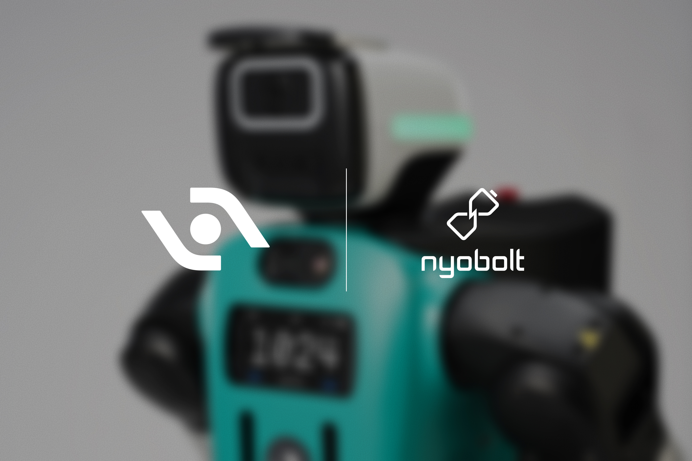

人形脉冲
本周上海工博会口径把「8000 台人形进工厂」写进 2028 节点，坪山与东湖高新则分别打开产业措施征求意见与专业园区评审公示；赛场侧杭京双城同期开赛，Agility 以 Nyobolt 快充把 Digit 5 的 uptime 叙事落到 10:1 充放比。编辑判断：政策与赛事都在逼问同一件事——能否用可审计工时，而不是展台节拍，回应部署态质疑。

国内政策
上海启动「加快发展新一代智能制造行动」：2028 年推动 8000 台人形机器人进工厂
10月13日，上海市政府门户转载《解放日报》稿：第二十六届中国国际工业博览会开幕式上，「上海市加快发展新一代智能制造行动」正式启动，落实全国先进制造业大会精神。行动提出四大工程与 19 项任务，明确到 2028 年全市重点制造企业智能工厂全覆盖、培育 500 家先进级智能工厂，制造业 AI 应用场景突破 2000 个，并量化推动工业机器人密度达 600 台/万人、8000 台人形机器人进工厂，新型智能制造装备产业规模突破 2000 亿元。编辑判断：人形指标与垂域大模型、智能体目标同屏，意味着采购将更依赖可对标的车间 KPI；整机与 RaaS 方宜提前对齐上海智能工厂梯度培育的验收字段，而非仅参与工博静态展示。
上海市人民政府
坪山区就人工智能和智能机器人产业措施公开征求意见（10 月 13 日—11 月 12 日）
10月13日，坪山区人民政府发布《深圳市坪山区关于促进人工智能和智能机器人产业高质量发展的若干措施（征求意见稿）》公众意见征集公告，公示 30 日，至 11 月 12 日止；反馈渠道含来信、来电与电子邮箱 zhouzhenfa@szpsq.gov.cn。编辑观点：珠三角地方细则往往决定补贴、场景开放与园区落地的可操作口径；企业若已有深圳布局，宜在窗口期内对照附件 PDF 中的支持条款与申报条件提出可核验修订建议，避免正式稿发布后被动适配。
深圳市坪山区人民政府
杭州：我国推动成立的具身智能国际标准焦点组第三次会议开幕
10月13日，杭州日报稿（经杭州政协网发布）称，全球首个由我国推动成立的具身智能国际标准焦点组（ISO/IEC JTC 1 相关机制）在杭州召开第三次会议，来自 43 个国家近 400 名专家参与，议题含多模态数据与接口互操作等两项关键技术规范。稿内并预告 10 月 16—18 日首届全球具身智能应用创新挑战赛暨 2026 中国机器人大赛在滨江开赛。编辑判断：标准焦点组与国家级中试基地赛事实质构成「规则—验证」双轨；读者应跟踪焦点组输出能否进入国标/行标引用的转化路径，而非仅统计参会国别数量。
杭州政协网（转载杭州日报）
东湖高新区公示 2025 年人形机器人专业园区建设政策评审结果
10月12日，东湖高新区科创局发布《关于东湖高新区 2025 年人形机器人专业园区建设政策评审结果的公示》，依据《东湖高新区促进人形机器人产业创新发展若干措施》（武新管科创〔2025〕1号）第八条实施细则，公示期 10 月 12 日—18 日（覆盖本期窗口）。编辑观点：专业园区政策兑现从「申报—评审—公示」进入可见阶段；对拟落地光谷的整机与供应链企业，下一步信号是公示无异议后的签约主体与园区物理载体是否绑定可公开的训练/中试面积，而非仅读评审名单。
武汉东湖新技术开发区
国外前沿
arXiv：Reflex 三阶段框架实现 G1 onboard 视觉反应式全身接抛箱
10月8日提交（arXiv:2610.12772，v1）。Reflex 分三阶段训练：RL 学全身接球、再学从不完整观测推断箱体动力学 latent、最后用 egocentric RGB-D 历史恢复同一 latent 并冻结全身控制器。仿真 egocentric 成功率 85.7%（相对特权观测 87.9%）；真机 G1 在 2.5 m、5 m 接人抛箱成功率 65%、40%，约为同距离人类捕捉者水平的 76% 与 59%。编辑判断：卸货口「抛接箱」比静态分拣更贴近物流峰值场景；产业侧应独立验证相机—控制中位 69 ms 延迟下的安全联锁，而非只看相对人类的比例系数。
arXiv
arXiv：PanTact 可穿戴接触界面教 G1 全身非手部接触操作
10月8日提交（arXiv:2610.12558）。PanTact 在 egocentric 视觉与 UMI 双夹爪之外，用模块化接触贴片记录人体接触位置与时序，再以 visuomotor 策略预测全身接触目标、由接触感知 WBC 在 G1 上执行；无需额外机身触觉传感器，演示含身体支撑、推扫与负载分担。编辑观点：把「接触事件」作为跨本体迁移接口，可缓解仅 retarget 关节角导致的接触错位；部署前仍须审计接触目标在工厂护栏、锐边场景下的力控上限。
arXiv
arXiv：HWAM 联合预测参考动作与执行后本体状态，弥合「动作—执行」缝
10月8日首提交、10月12日修订 v2（arXiv:2610.12026）。HWAM 在 LimX OLI 人形上把机器人执行后的 proprioceptive 状态设为与参考动作并列的生成目标，并通过 Policy / FDM / IDM 三路径联合训练；真机三项任务中 Candy Picking 成功率 70.6%，报道对照 Fast-WAM 43.3%。编辑判断：层级控制下显式建模「参考—实达」差值，有利于 MES 侧对齐 WBC 残差；需披露各任务遥操占比与失败模式分类，方可外推至 24×7 产线。
arXiv
arXiv：LiDAR 粒子地图构建时空安全走廊，Digit 仿真动态非凸导航成功率 96%
10月12日提交（arXiv:2610.17232）。方法从 LiDAR 粒子表示直接生成 spatio-temporal safe corridors，并与 LIP 足步规划、WBC 耦合，在 Digit 仿真 24×24 m arena 绕行动态非凸障碍成功率 96%；消融称迭代 polytope 生成优于单次迭代。编辑观点：与 Agility 无围栏叙事同向，但仍是仿真口径；读者应等待与 Digit 5 机载感知栈、客户现场 MTBF 的交叉验证，而非把 96% 直接映射为仓库 SLA。
arXiv
重点新闻
本期主条
Agility 选定 Nyobolt 为 Digit 5 超快充电芯伙伴：90 分钟运行、9 分钟充电
10月15日，Agility 官方宣布 Nyobolt 为 Digit 5 电池技术提供方：目标 90 分钟运行、9 分钟充满，run-to-charge 由 Digit 4 的 2:1 提升至 10:1，口径称 24 小时内可支持 20 小时以上有效作业；H1 2027 起向仓储等客户开放 early access。通稿并重申与 CCXI 合并拟于 2026 年四季度完成、纳斯达克 ticker「AGLT」。编辑判断：uptime 叙事若成立，将直接改写 RaaS 计费曲线；产业读者应要求第三方在客户现场测循环寿命与热失控预案，而非仅读 press release 中的目标比值。
Agility Robotics
HIVE × Føtex：丹麦超市夜间补货试点，目标 2027 年初部分 SKU 自主
10月14日前后，欧洲媒体集中报道丹麦 HIVE Robots 在 Lyngby 附近 Føtex 门店用 Unitree 人形学习夜间补货（训练自 6 月启动）；HIVE 官网展示实店作业图，并面向 2027 年零售 launch partner 招募，口径为按小时付费的 RaaS、含远程操作与维护。稿引 Salling Group 称员工 40%—50% 工时用于上架，当前机器人仍慢于人工且多由遥操引导。编辑观点：超市闭店场景是「弱安全、强重复」的欧洲合规试验田；应跟踪丹麦劳动与公众场域法规是否允许 2027 后降低人控比例，而非把试点照片等同 autonomous 里程碑。
HIVE Robots
首届全球具身智能应用创新挑战赛暨 2026 中国机器人大赛在杭举行
10月15日，杭州网（Ecns 稿）报道，10 月 16—18 日首届全球具身智能应用创新挑战赛与 2026 中国机器人大赛将在白马湖国际会展中心及滨江智造谷同期举办，共 22 赛道、60 赛项，新增 17 个具身智能赛项（柔性分拣、空地协同、羽球、灵巧操作等）。国家具身智能应用中试基地方面强调赛题要求机器人在真实环境连续闭环而非单动作表演。编辑判断：与 ISO 焦点组会议同周，构成杭州「标准+赛证」窗口；入选队伍若能在赛后公开失败片段与传感配置，比奖牌本身更具采购参考价值。
杭州网（英文稿）
2026 机器人勇士挑战赛秋季赛：亦庄户外 14 项障碍检验人形应急任务
北京市政府门户 10 月 10 日发布科委稿预告：10 月 17—18 日机器人勇士挑战赛秋季赛在经开区南海子公园约 6500 ㎡户外场地举办，设远程遥控与自主导航双维度分组，人形组含拉门进入、危爆排除、关阀、灭火及梅花桩附加项；并首次开放 BotWorld 线上仿真与线下实体联动。稿引春季夺冠「天工 3.0」已进入量产交付并落地多行业 3D 场景。编辑观点：赛事 KPI 偏应急与可靠性，与工厂节拍赛不同；企业若参与，宜同步披露与量产机型共享的感知/运控版本号，避免「赛场特调」与交付机不一致。
首都之窗（北京市人民政府门户网站）
第 140 届广交会首期：琶洲馆区人形与具身产品集中演示
10月18日，广州市政府门户转载《广州日报》稿：第 140 届中国进出口商品交易会 10 月 15 日开幕，琶洲展馆呈现人形机器人羽毛球、机器狗穿梭、双臂咖啡拉花及人机乒乓对打等演示，第一期以「先进制造」为主题并设新兴产业与未来产业专区。编辑判断：广交会是出口采购的风向标，但演示密度高、单次交互短；外贸型整机厂应准备可带离展位的连续运行录像与备件清单，帮助客商区分「展台 skill」与 FOB 交付能力。
广州市人民政府门户网站
央视解读首批六项人形国标：王兴兴等起草人谈感知—决策—运控—作业量化指标
10月16日，新浪财经转载央视新闻客户端稿：市场监管总局批准六项人形国标将于 2027 年 4 月 1 日实施，稿引全国机器人标委会秘书长李金村与起草人王兴兴、全琪、任容玮等，解释总则、环境感知、决策规划、运动控制、作业操作及仿真测试平台如何构成「认知—行动—验证」闭环，并举例指令准确率 ≥95%、抓取刚性物体成功率 ≥90% 等量化口径。编辑观点：与 №03 已报道的 GB/T 48316—48317 系列形成传播—技术互证；企业宜对照分册做型式试验留痕，而非等待 2027 年才启动合规差距分析。
新浪财经（转载央视新闻客户端）
2026 中国（温州）具身智能机器人应用及产业展览会开幕
温州市贸促会官网信息：10 月 17—19 日 2026 中国（温州）具身智能机器人应用及产业展览会在温州国际会议展览中心举行，主题「具身智能，智造无限」，宇树、科大讯飞、云深处、智元等确认参展，并联动机械装备展与「走进百家制造工厂」观摩。编辑判断：温州强调中小制造企业实训场景与数安港 6S 中心生态；对编辑而言，关键在展会期间是否发布带 PO 编号与计费口径的 RaaS 试点，而非仅列头部 LOGO。
中国国际贸易促进委员会温州市委员会